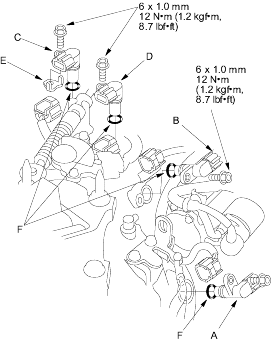

- Disconnect connectors from the drive pulley speed sensor (A), driven pulley speed sensor (B), CVT speed sensor (C) and vehicle speed sensor (D).

- Remove the 6 mm bolts, then remove the speed sensors. Remove the sensor washer (E) from the CVT speed sensor (C).
- Replace the O-rings (F) with new ones before installing the speed sensors.
- Install the sensor washer on the CVT speed sensor and install them.
- Install the drive pulley speed sensor, driven pulley speed sensor and vehicle speed sensor.
- Check the speed sensor connectors for rust, dirt, or oil, then connect the connectors securely.
- PCM
- Transmission assembly
- Lower valve body assembly
- Engine assembly replacement or overhaul
- Start the engine and warm up to normal operating temperature (the radiator fan comes on).
- Shift to
 position.
position. - Drive the vehicle on a flat road.
- Accelerate to the speed 37 mph (60 km/h), then release the accelerator and decelerate for 5 seconds. Do not press the brake pedal to decelerate. The start clutch feedback control signal have beeNmemorised in the PCM.
- Test-drive the vehicle and check the engine does not stall and the vehicle can start off smoothly.
- If the engine stalls or any shifting failure occurs at starting off, re-calibrate the start clutch feedback control signal.